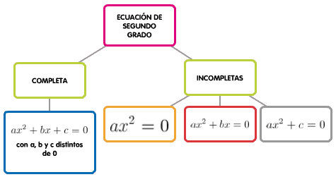
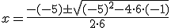
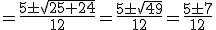
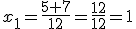
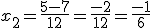
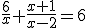

3.2. Ecuaciones de segundo grado y racionales
Las ecuaciones de segundo grado ya eran conocidas por las civilizaciones mesopotámica y egipcia. Los matemáticos griegos hicieron aportaciones interesantes referentes a su resolución. Los conocimientos sobre estas ecuaciones fueron transmitidos a Europa por los matemáticos árabes del siglo VIII.
Importante
Una ecuación de segundo grado con una incógnita es una igualdad algebraica que se puede expresar en la forma:
ax2 + bx + c = 0 siendo a, b y c números reales y a≠0.
-
a y b son los coeficientes de la ecuación.
-
c es el término independiente.
Si b≠0 y c≠0, se dice que la ecuación es completa. Si b = 0 o c = 0 la ecuación es incompleta.

Imagen de elaboración propia
Para resolver una ecuación de segundo grado procedemos, en principio, como en las de primer grado (eliminando paréntesis y denominadores) para encontrar una ecuación de la forma ax2 + bx + c = 0, donde a, b y c son números reales (si a = 0 entonces la ecuación no sería de segundo grado).
Importante
Las ecuaciones de segundo grado pueden tener dos, una, o ninguna solución. Para resolverlas, usaremos la siguiente fórmula:

En la fórmula hay una raíz cuadrada que va a ser la que determine el número de soluciones de la ecuación. La expresión a la que calculamos la raiz, b2 - 4ac, se llama discriminante. Tendremos los siguientes casos:
- Si b2 - 4ac > 0: La raíz existe y, por lo tanto, la ecuación tendrá dos soluciones, una operando con el signo + que hay delante de la raíz y otra operando con el signo -.
- Si b2 - 4ac = 0: La raíz vale 0 y la ecuación tendrá una única solución, x = -b/2a.
- Si b2 - 4ac < 0: La raíz no existe y la ecuación no tiene solución.
Veamos el siguiente ejemplo:
En este caso, será a = 6, b = -5 y c = -1. Si lo sustituimos en la fórmula, obtenemos:


Por tanto, tenemos dos soluciones, una operando con + y otra con -.

y
Ejercicio Resuelto
Resuelve la ecuación: (x + 1)2 - (3x + 8) = -(2x + 3)2
- Eliminamos paréntesis:
- Pasamos todos los términos al mismo miembro:
- Usamos la fórmula de resolución:
Comprueba lo aprendido
Resuelve las siguientes ecuaciones y completa los huecos. Si tiene una única solución, escríbela repetida en cada hueco. Si no tiene solución, escribe no en cada hueco. Los huecos con una barra (/) entre ambos indican que esa solución es una fracción.
¿Qué ocurre si en una ecuación aparece la incógnita en el denominador? A estas ecuaciones se les llaman racionales y el proceso para resolverlas es el siguiente:
- Eliminar denominadores mediante el cálculo de su mínimo común múltiplo y posterior reducción a común denominador.
- Operar.
- Resolver la ecuación final.
Importante
En las ecuaciones racionales es importante eliminar de las soluciones los valores que anulen el denominador.
Ejercicio Resuelto
Resuelve la ecuación

Multiplicamos por el mínimo común múltiplo que, en este caso, es x(x - 2). Simplificamos:
Simplificamos las fracciones y reducimos términos:
Resolvemos la ecuación de segundo grado que hemos obtenido (en este caso):
Comprueba lo aprendido
Escena de Miguel Ángel Cabezón Ochoa en Proyecto Descartes. Licencia CC